Este es Toñito tiene 3 meses de nacido, se le encontro en las vias del tren de la avenida grau, al principio era agresivo pero a medida que fue conviviendo con otros perritos se fue volviendo mas amigable. CODE: A7K2
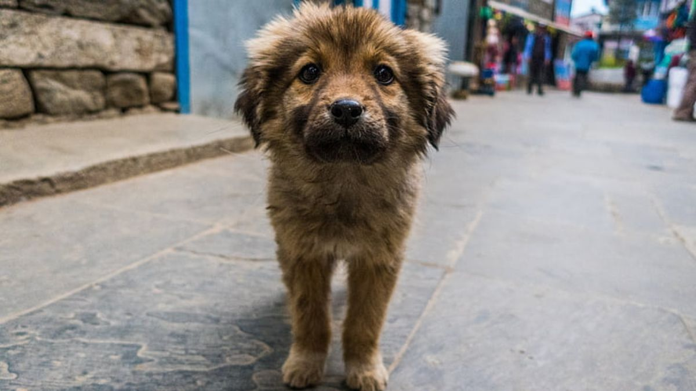
Este es Bobi tiene 6 meses de nacido, fue encontrado en las calles del centro de lima buscando basura como comida, desde un inicio fue amigable, ahora que convive con otros perritos se volvio dependiente de alguna compañia. CODE: M9Q1
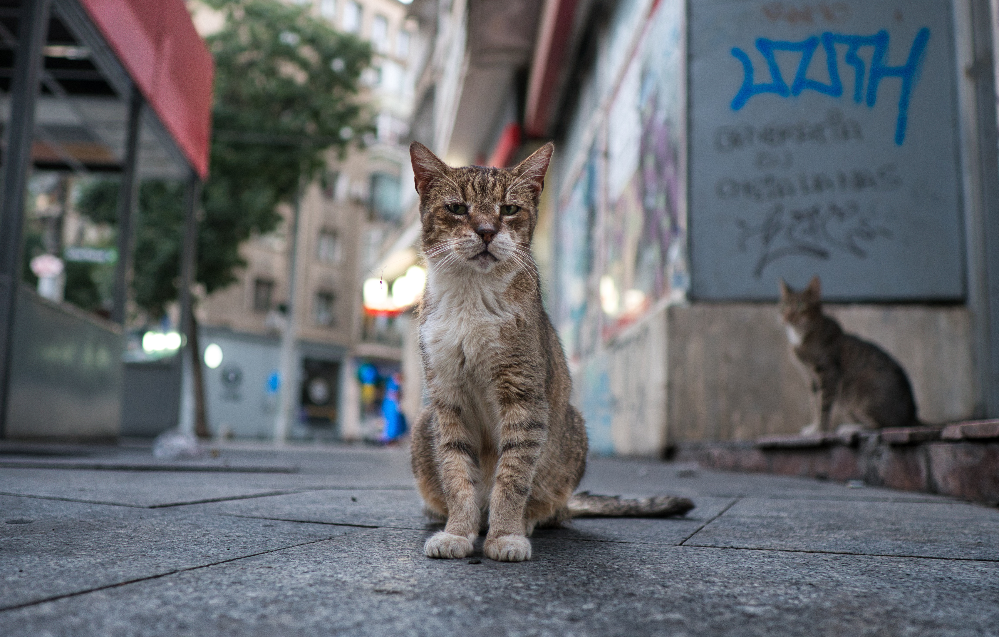
Este es copo, actualmente tiene 1 año, fue encontrado siendo golpeado por otros animales, es muy tranquilo y esta en busca de una familia que lo adopte. CODE: T4Z8
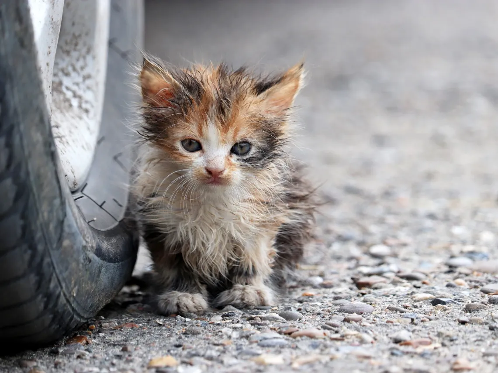
Este es copito, se le llamo asi por que siemper para pegado a copo, cuenta con 1 mes de nacido, fue encontrado a las afueras de un centro comercial en plena lluvia, por lo pequeño que era no puso resistencia, esta en busca de una familia. P3X6

Este es robi, cuenta con 3 meses de nacido, fue encontrado diambulando por las calles de la victoria, es tranquilo pero come demasiado. J8L0
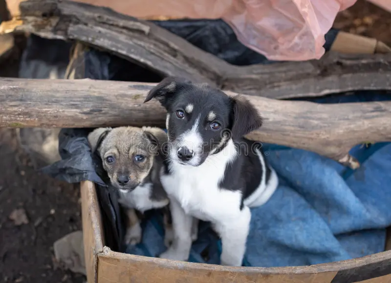
Estos son pedro y paco, los dos cuentan con 1 año, se les encontro diambulando por las calles de el agustino, son inseparables y si desea adoptarlos los dos se van juntos. R5D9
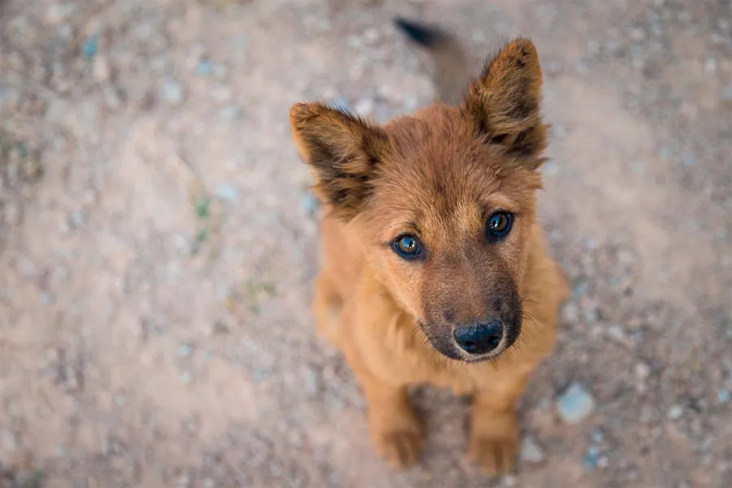
Este es wolfi, cuenta con 4 meses de nacido, fue encontrado comiendo basura en el ovalo de santa anita, era muy agresivo pero al pasar de los dias fue controlando su temperamento V1N7

Este es bigotes, tiene 4 meses de nacido, fue encontrado diambulando con una patita rota por las calles de chorrillos, sin bigotes ya que alguien se los corto, debido a ese se le puso ese nombre. H6C2
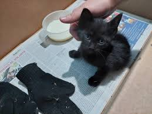
Este es lirio tiene 1 mes de nacido, fue encontrado en una caja en la calle, tuvimos suerte que siguiera con vida debido al calor inmenso que estaba haciendo, se le puso el nombre de una flor, esta en busca de una familia. S9B4
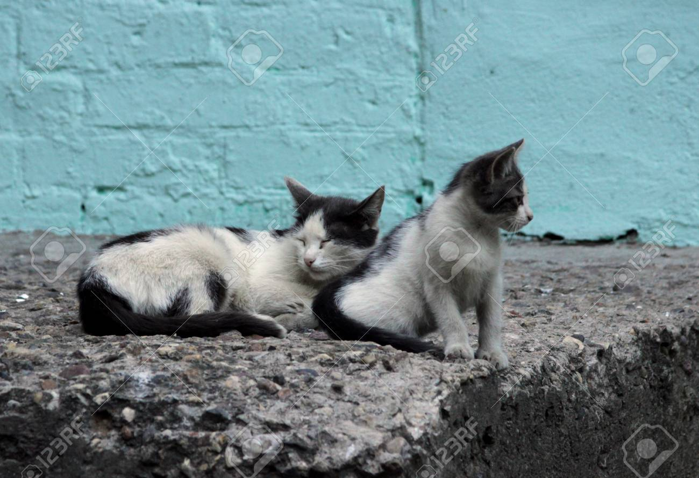
Estos son kit y kat, actualmente tienen 1 año y 6 meses respectivamente, los dos eran callejeros en el distrito de ate, ahora estan en busca de una familia que adopte a los dos juntos, son como hermanos K2F8
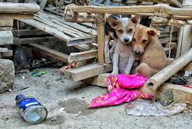
Este son pepe y tito, tienen 5 meses, fueron encontrados en la calle comiendo basura, al principio eran agresivos pero a medidad que se juntaban con otros animales se volvian mas amigables. X7W1
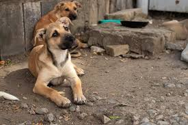
Este es rabito, cuenta con 1 año de nacido, se lo encontro diambulando en la calle, no tiene cola debido a que dicen que sus anteriores dueños se la cortaron, de ahí su nombre. D0M5
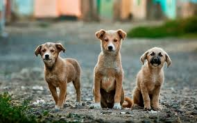
Estos son athos, portos y alamis, estimamos que tienen entre 6 o 7 meses, los tres fueron encontrados en graves situaciones de hambre. L8P3
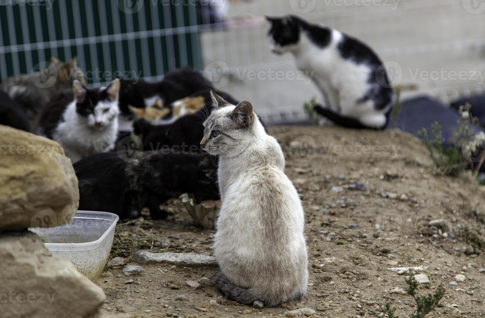
Este es pelusa, cuenta con 10 meses de nacido, fue encontrado cojeando en las calles de santa anita, antes era mas agresivo pero ahora se volvio mas amigable con sus amigos. Z1R6
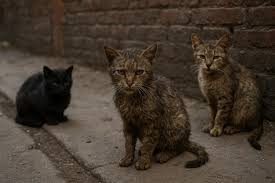
Estos son harry, rone y hermione, los tres viene juntos, ya que nacieron el mismo dia, tiene 9 meses, estan en busca de una familia Q4T9
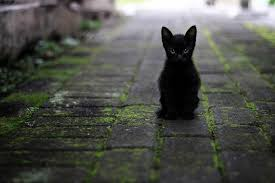
Esta es voida, es una gatita de 2 meses de nacido, esta en busca de una familia.
B7H2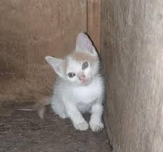
Este es luz, es una gatita de 3 semanas de nacido, esta en busca de una familia.
N3S8